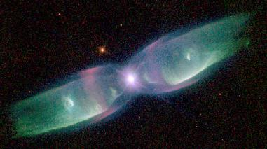

Nebula Design Contest

The seventh Nebula contest was to create a pilot/astrogator for a small exploratory/merchant
ship. Four entries were received:
Wallace Estralla
Rutger Wolfe
Isabella
Andrei Ngoyen
The vote totals were:
| Wallace Estralla | 1.5 |
| Isabella | 2.0 |
| Andrei Ngoyen | 2.5 |
| Wallace Estralla | 3.1 |